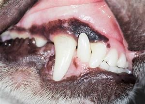

Brulpatologia lexicala cuprinde tot ce este in dialectul si exprimarea plebului. Tot ce este excretat prin orificiul bucal, anal sau din aripa stanga(vezi enciclopedia emanuelului ghebanos) este, in scurt, e incercare de exprimare!
plebosenie scamosata -----
